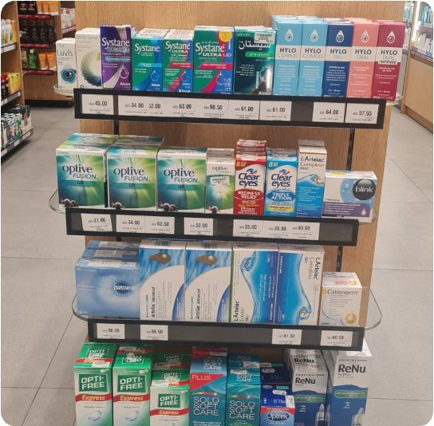

GCC Market Entry for an Ophthalmology Pharma Brand
GCC pharma entry looks simple from the outside. Inside, regulatory timelines, KOL dynamics, and distributor relationships determine whether you get market access in 18 months or 48. The difference is intelligence gathered before commitments are made.
The Situation
A strong ophthalmology portfolio. An underserved GCC market. But no map of the regulatory, KOL, or distribution landscape.
An ophthalmology-focused pharmaceutical company with a strong portfolio of prescription eye care products had identified the GCC region as its next international expansion priority. The region's growing prevalence of eye conditions – driven by demographic trends, lifestyle factors, and improved diagnostic infrastructure – created a clear market opportunity. Several competitors had already entered, but penetration remained patchy.
The challenge was that pharma market entry in GCC is fundamentally different from India or Europe: regulatory timelines vary significantly by country, KOL influence is concentrated among a small number of senior ophthalmologists, and distributor selection is a long-term commitment that is difficult to reverse. Getting any of these three wrong could cost two to three years.
GreyRadius was engaged to design a comprehensive market entry strategy covering all five GCC markets – with primary research on market sizing, KOL mapping, regulatory pathway analysis, and distribution partner shortlisting.
Engagement at a glance
Client
Ophthalmology pharma company (India-based)
Markets assessed
UAE, KSA, Qatar, Kuwait, Oman
Service
Market Entry Execution · Opportunity Assessment
Focus
KOL mapping, regulatory pathway, distributor shortlist
Three parallel tracks – regulatory, KOL, and distribution – each capable of derailing the entry if mishandled.
Complex regulatory environment
UAE (MOHAP), KSA (SFDA), Qatar (MOPH), and other GCC regulators have different registration requirements, timelines, and data submission standards. A company that sequences these incorrectly – or submits incomplete dossiers – can lose 12–24 months before a single product is on shelf.
KOL influence concentration
In GCC ophthalmology, prescription volumes are disproportionately influenced by a small number of senior consultants at major hospital networks. Engaging the wrong KOLs – or engaging the right ones in the wrong order – results in slow adoption regardless of product quality or clinical evidence.
Distributor lock-in risk
Pharmaceutical distribution agreements in GCC countries often include exclusivity clauses and minimum commitment obligations. A distributor selected on the basis of network size rather than ophthalmic sector depth can limit market reach for years without providing a viable exit pathway.
Market sizing. KOL mapping. Regulatory sequencing. Distributor evaluation – all built from primary intelligence in GCC.
Market sizing & prioritisation
Assessed all five GCC markets for ophthalmology category size, growth trajectory, competitive penetration, and regulatory maturity. Produced country-by-country market sizing and recommended a phased entry sequence – UAE and KSA first, with Qatar as a secondary market and Kuwait and Oman in phase two – based on near-term revenue opportunity and regulatory complexity.
KOL mapping & engagement strategy
Mapped the ophthalmology KOL landscape across UAE, KSA, and Qatar – identifying the senior consultants and department heads with disproportionate influence over prescription behaviour at major hospital networks. For each priority KOL, documented their institutional affiliation, clinical interests, publication and conference activity, and the most effective engagement approach. Recommended a pre-distribution KOL engagement sequence.
Regulatory pathway analysis
Mapped full regulatory approval requirements for the client's priority product lines across UAE (MOHAP) and KSA (SFDA) – covering submission requirements, reference country pathways, typical timelines, and the specific dossier sections most likely to generate queries. Built a parallel submission strategy to minimise total time to first registration and identified pre-submission steps that could be completed before distributor selection.
Distributor evaluation & shortlisting
Evaluated 12 potential distribution partners across UAE and KSA using a structured scorecard covering ophthalmic portfolio depth, hospital network relationships, regulatory capabilities, financial stability, and management quality. Shortlisted four partners – two per priority market – with detailed profiles and recommended contract structure guidance including exclusivity scope and performance commitments.
"GCC pharma entry looks simple from the outside. Inside, regulatory timelines, KOL dynamics, and distributor relationships determine whether you get market access in 18 months or 48. GreyRadius mapped all three."
Five markets sized. KOLs mapped. Regulatory pathways defined. Four distributors shortlisted.
Market coverage
5 GCC markets
All five assessed; UAE and KSA prioritised for phase one with a clear phase two sequencing
KOL mapping
3 countries mapped
UAE, KSA, and Qatar – key prescribers identified with engagement sequence and institutional affiliations
Regulatory
UAE & KSA defined
Full submission roadmap with parallel processing strategy – estimated 30% faster than sequential approach
Distribution
4 partners shortlisted
Two per priority market – evaluated from 12 candidates against ophthalmic depth and hospital relationships
Individual market assessments for all five GCC countries with category sizing, competitor presence, and recommended entry sequencing.
Detailed profiles for priority KOLs across UAE, KSA, and Qatar – with institutional affiliations, clinical interests, and recommended engagement approach.
Full pathway for UAE and KSA with parallel processing strategy, dossier requirements, and timeline estimates for each product in the priority portfolio.
Scored evaluation of 12 candidates with detailed profiles on 4 shortlisted partners and recommended contract structure including exclusivity and performance terms.
From the engagement

GreyRadius gave us the market intelligence we needed to enter GCC with confidence – validated KOL contacts, distributor shortlists, and a regulatory timeline that was 30% faster than our original estimate.
"In GCC ophthalmology, three or four specialist KOLs in each market drive the majority of prescription volumes. Identifying and engaging them before distributor selection – not after – is what separates successful launches from slow burns."
Expanding a pharma or medical device product into GCC?
We have deep primary research capability across GCC healthcare markets – regulatory intelligence, KOL mapping, and distributor evaluation across UAE, KSA, Qatar, and beyond.